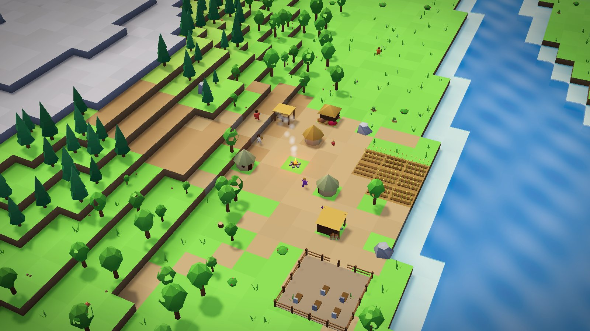
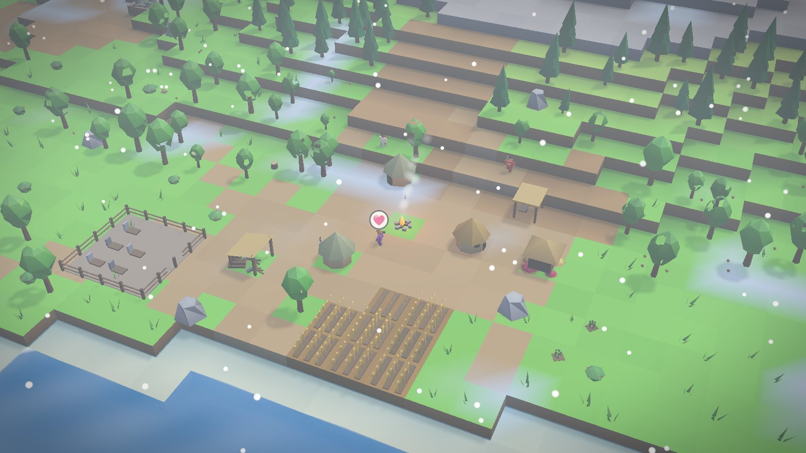
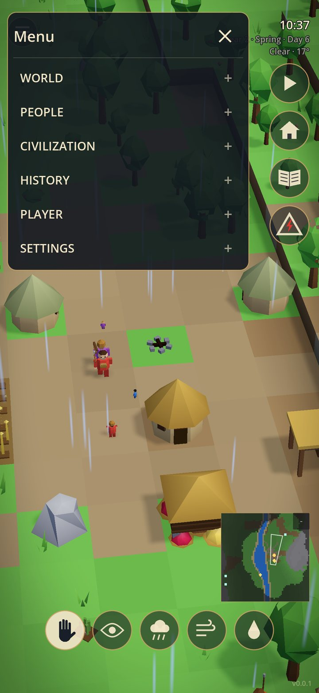
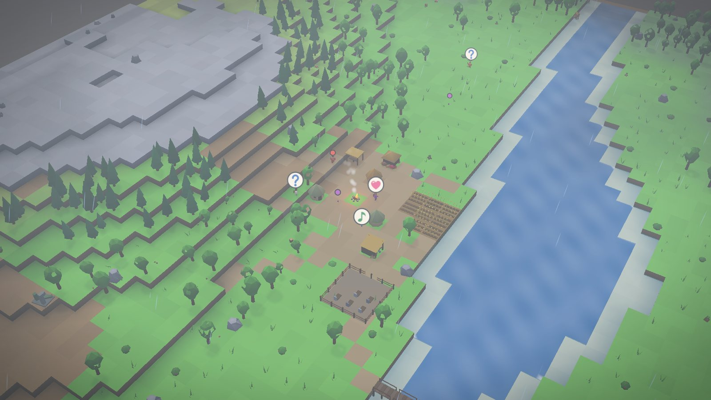
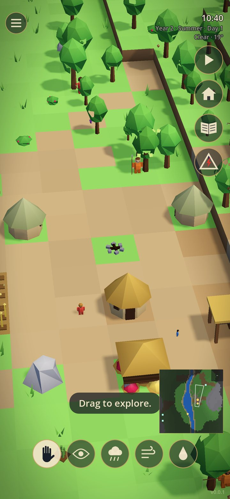
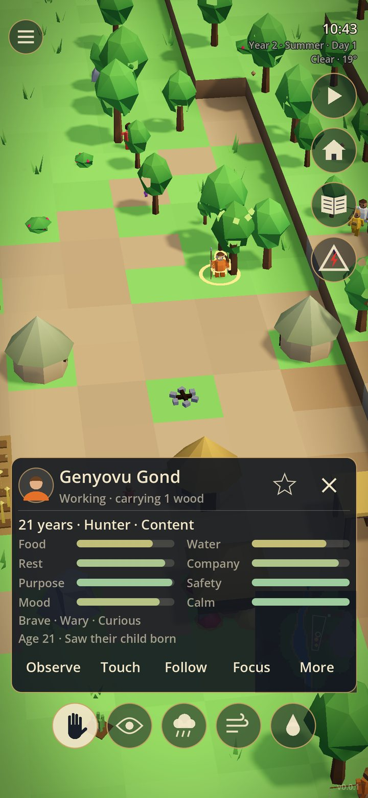
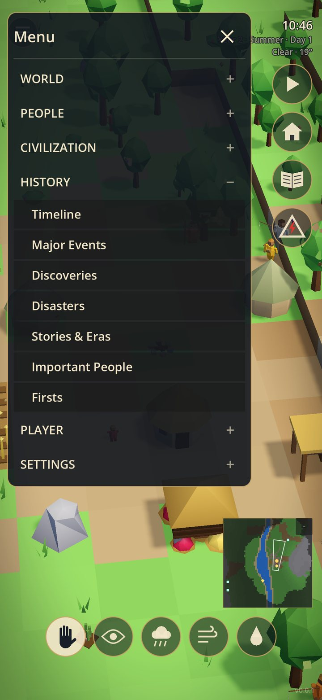
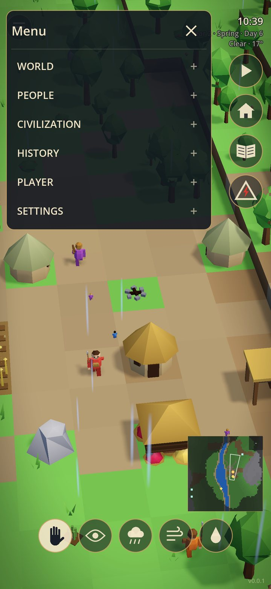

Interact, don't command
Every touch is something that happens to them, never an order. The same touch means different things to different people.
A living diorama for your phone
You can't command them. You can only touch their world — and they will remember. Over generations they wonder what you are, tell stories about you, and slowly begin to discover the box.
The premise
Nobody tells them what you are. They name you themselves — differently, and maybe wrongly. A tap on the shoulder might be a blessing to one person and an omen to the next. Rain from a clear sky becomes a story. A story becomes a belief. A belief becomes a way of life.
Every touch is something that happens to them, never an order. The same touch means different things to different people.
Close the app and the world goes on. Come back to find who was born, who died, what was built — and what they made of your silence.
No points, no good-or-evil meter, no timers. What you do is remembered — in memories, in customs, in history.
What lives in the box
People
Each inhabitant has needs, a temperament, a trade, friends and rivals. They eat, gather, fish, farm, fall in love, quarrel, grieve and grow old — and you can see it on them, from the heart above a pair of new partners to the angry shove of a fight.

Settlements
Nobody places a building but them. A band around a fire becomes a village of huts, stores, fields, workshops and landings. When it grows crowded, the adventurous set out to found a new settlement — each with its own leader, customs and colours.
Danger & conflict
Bears, wolves and mountain lions wander in from the wilds. Someone spots one, the alarm goes up, and a hunting party gathers at the fire to track it down. Between settlements, hunger breeds disputes, raids and — at worst — war, fought in the open on the ground between their fires.

Seasons & weather
Spring rains swell the river, summer droughts wither the crops, winter brings snow, frost and blizzards. A poor harvest becomes a hungry season; a great storm becomes a story told for generations. And you can bring the weather yourself — with consequences.

History & myth
Every birth, death, discovery, flood and festival is recorded. The game finds the stories in it — “The Hungry Winter of Year 49 caused the death of Picha, which led to Mile coming to lead Hipa” — and the people tell their own, about the storms, about each other, and about you.

“I wonder what happens if I do this?”
Where it goes
The box reveals itself slowly. What begins as a little world you can poke becomes a civilization with a past — and, one day, a people who look back at you.
A tiny world that answers your touch.
People with lives of their own.
Villages, trades, beliefs and leaders.
Generations, eras and stories.
Clues that the world is not what it seems.
The world is watching back.
Made for your phone
Tap a person to see how they are. Watch the world from above or follow one life up close. Open the journal to read everything that has happened while you were away.




Gallery
Every picture here is from the game as it runs — nothing staged, nothing painted over.
Questions
A living miniature world — part toy, part life simulation, part slowly unfolding mystery. It is not a city builder: you never place buildings or give orders. You watch, you touch, you experiment, and the world responds in its own way.
No scores and no good-or-evil meter. The reward is curiosity: what will they make of what you did, and what has happened since you last looked?
Yes. While you are away the world lives on, and when you return you are told what happened while you were gone — births, deaths, discoveries, disasters and whatever they made of your absence.
Never. There are no energy bars, no timers and no login rewards. A thirty-second visit is enough; so is a long evening following one family through the generations.
No. The whole world lives on your phone and plays fully offline.
My World in a Box is being made for Android phones first. Other platforms may follow.
My World in a Box is in development for Android. Follow along — and be among the first to lift the lid.